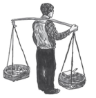

3. BOŞ BİR ARAZİYE EV YAPAN GİRİŞKEN KİŞİ
AH OĞLUM, KORKMUŞSUN SEN İSTANBUL’DAN
Mevlut, İstanbul’da ilk aylarında geceleri yatağında yatarken şehrin uzaktan gelen gürültüsüne dikkat ederdi. Bazan korkuyla uykusundan uyanınca sessizlikte çok uzaktan gelen köpek havlamalarını duyar, babasının eve dönmediğini anlar, kafasını yorganın içine gömüp uyumaya çalışırdı. Mevlut o günlerde geceleri köpek korkusuna fazla kapılınca babası onu Kasımpaşa’da ahşap bir evdeki bir şeyhe götürüp okuyup üfletti. Mevlut bunu yıllar sonra hatırlayacaktı.
Bir gece rüyasında Atatürk Erkek Lisesi’nin müdür yardımcısı “İskelet”in yüzünün elektrik direğinin üstündeki, “ölüm” diyen kurukafaya benzediğini keşfetti. İskelet’le, köyden getirdiği ilkokul diplomasını babası kayıt için verirken tanışmışlardı. Mevlut matematikten başını hiç kaldırmazdı çünkü karanlık pencereden kendisini gözetlediğini sandığı Cin ile göz göze gelmeyi hiç istemezdi. Bu yüzden uyumak için yatağa bile gidemezdi bazan.
Kültepe, Duttepe ve diğer tepelerdeki mahalleleri Mevlut, oraları bir yılda çok iyi öğrenen Süleyman’ın yardımıyla tanıdı. Kimisinin temelleri daha yeni atılmış, kimisinin duvarları yarıya kadar yükselmiş, hatta bitirilmekte olan pek çok gecekondu gördü. Bunların çoğunda yalnız erkekler yaşıyordu. Son beş yılda Kültepe’ye, Duttepe’ye Konya’dan, Kastamonu’dan, Gümüşhane’den gelenlerin çoğu ya Mevlut’un babası gibi karılarını ve çocuklarını köyde bırakmışlardı ya da köyde evlenemeyecek, işsiz güçsüz, malsız mülksüz bekâr erkeklerdi. Tek odalık bazı evlerde altı yedi bekâr erkeğin yataklarda ölü gibi yatıp dinlendiğini açık kapılardan görünce de Mevlut etraftaki hırçın köpeklerin varlığını hissederdi. Bu evlerden dışarıya gelen yoğun nefes, ter ve uyku kokusunu köpekler fark ediyor olmalıydı. Kavgacı, suratsız ve şefkatsiz oldukları için Mevlut bekâr erkeklerin çoğundan korkardı.
Aşağıda Duttepe çarşısında, ileride otobüslerin son durağı olacak anacaddede, babasının “kazıkçı” dediği bir bakkal ve çimento çuvalları, hurda kapılar, eski kiremitler, soba boruları, teneke parçaları ve plastik örtüler satan bir dükkân ve sabah şehirde iş bulamamış erkeklerin akşama kadar pineklediği salaş bir kahve vardı. Tepeye çıkan yolun ortasında Hasan Amca da küçük bir bakkal dükkânı açmıştı. Mevlut boş vakitlerinde oraya çıkar, amcaoğulları Korkut ve Süleyman ile eski gazeteleri katlayarak kesekâğıdı yapardı.
Süleyman. Mustafa Amcamın huysuzluğu yüzünden Mevlut bir senesini köyde boşu boşuna kaybettiği için Atatürk Erkek Lisesi’nde benden bir sınıf geriye düştü. Okulda teneffüslerde Mevlut’u tek başına bahçede görünce yanına gider, acemi İstanbullu amcaoğluyla arkadaşlık ederdim. Biz Mevlut’u çok severiz ve onu babasından ayırırız. Okullar açılmadan önce bir gece Mustafa Amca ile bizim Duttepe’deki eve geldiler. Mevlut annemi görür görmez kendi annesine, ablalarına duyduğu özlemle sarıldı ona.
“Ah oğlum, korkmuşsun sen İstanbul’dan,” dedi annem ona sarılarak. “Korkma, bak biz hep buradayız.” Mevlut’u annesinin yaptığı gibi saçlarından öptü. “Söyle bakalım, şimdi İstanbul’da ben senin Safiye Yengen mi olacağım, Safiye Teyzen mi?”
Annem, Mevlut’un hem amcasının karısı, yani yengesi; hem de annesinin ablası, yani teyzesidir. Mevlut yazları babasıyla benim babamın bitip tükenmez kavgalarının etkisi altına girerse ona “yenge” der, ama Mustafa Amcam İstanbul’dayken kışları annesi ve ablalarının tatlı havasıyla ona “teyze” derdi.
“Her zaman teyzemsin,” dedi Mevlut anneme içtenlikle.
“Baban kızmasın sonra!” dedi annem.
“Aman Safiye, sen ona annelik et,” dedi Mustafa Amca. “Burada öksüz kaldı, geceleri ağlıyor.”
Mevlut utandı.
“Okula yazdırıyoruz,” diye devam etti Mustafa Amca. “Ama kitaptı, defterdi çok tutuyor. Bir de ceket lazımmış.”
“Okul numaran kaç?” diye sordu Korkut Ağabeyim.
“1019”.
Ağabeyim yan odaya gitti ve sandığın dibinden arayıp ikimizin eski okul ceketini çıkardı. Dövüp tozunu aldı, buruşukluklarını açtı ve ceketi Mevlut’a bir terzi gibi özenle giydirdi.
“Çok yakıştı sana bu 1019,” dedi Korkut.
“Evet, maşallah, yeni cekete de hiç gerek yok,” dedi Mustafa Amca.
“Biraz bol, ama daha iyi,” dedi Korkut Ağabeyim. “Dar ceket kavgada zorluk çıkarır.”
“Yok, Mevlut okula kavga etmek için gitmiyor,” dedi Mustafa Amca.
“Tabii kavga etmeden durabiliyorsa,” dedi Korkut. “Bazan eşek suratlı manyak hocalar insana öyle bir takıyorlar ki, insanın kendini tutması mümkün olmuyor.”
Korkut. Mustafa Amca’nın “Mevlut kimseyle dövüşmez,” demesinden pirelendim; beni küçümsediğini hissettim. Üç yıl önce ben, Mustafa Amcam ve babam onların Kültepe’de birlikte çevirip yaptıkları evde (bugün Mevlutların kaldığı yer) otururken ben okulu bıraktım. Okula dönmeyi hiç aklımdan geçirmeyeyim diye okuldaki son günlerimde eşek suratlı, fiyakalı kimyacı Fevzi’ye sınıfın önünde iki tokat, üç yumruk atıp hak ettiği dersi de verdim. Önceki yıl Pb2SO4 neymiş deyince verdiğim “pabuç” cevabıyla alay edip bütün sınıfın önünde aklınca beni aşağıladığı ve beni boş yere çaktırdığı için bu dayağı çoktan hak ediyordu. Öğretmenini derste evire çevire dövebildiğin liseye de –adı istediği kadar Atatürklü olsun– zaten benim saygım kalmaz.
Süleyman. “Ceketin sol cebinin astarında delik var, ama sakın diktirme,” dedim şaşkın Mevlut’a. “Sınavlarda kopyayı oraya saklarsın. Zaten biz bu ceketin faydasını okulda değil, akşamları boza satarken gördük. Gece yarısı, soğuk sokaklarda okul ceketiyle satıcılık yapan bir çocuğa kimse dayanamaz. ‘Evladım, okuyor musun sen?’ deyip ceketin cebine çikolatalar, yün çoraplar, paralar sıkıştırırlar. Eve gelince de ceketini tersyüz eder, içindekileri alırsın. Okulu bıraktım da sakın demeyeceksin. İleride doktor olacağım dersin.”
“Mevlut okulu bırakmayacak ki!” dedi babası. “Gerçekten doktor olacak Mevlut. Değil mi?”
Mevlut kendisine gösterilen şefkatin acımayla karışık olduğunu da anlıyor, neşelenemiyordu. Amcalarının, Mevlut’un babasının yardımıyla Kültepe’nin karşısındaki Duttepe’de yapıp, geçen sene hep birlikte taşındıkları bu ev, babasıyla yaşadığı gecekondularından çok daha temiz ve aydınlıktı. Köyde yere sofra kurarak yemek yiyen amcası ve yengesi şimdi üzerine çiçekli bir naylon örtü serdikleri bir masaya oturmuşlardı. Zemin toprak değil, taştı. Ev kolonya kokuyor, ütülü temiz perdeler Mevlut’a buraya ait olma isteği veriyordu. Amcalarının evinin şimdiden üç odası vardı ve sığırlar, küçük bahçe, ev dahil her şeyi satıp köyden bütün aile göç eden Aktaşlar’ın burada mutlu bir hayat yaşayacaklarını Mevlut çok iyi görüyor, bunu henüz başaramamış olan ve başarmaya niyetliymiş gibi davranmayan babasına karşı bir kızgınlık duyuyor ve utanıyordu.
Mustafa Efendi. Biliyorum, benden gizli amcanlara gidiyorsun, Hasan Amcanın bakkal dükkânına gidip gazete katlıyorsun, sofralarına oturup yemek yiyorsun, Süleyman ile oynuyorsun, ama unutma, onlar bizim hakkımızı yediler, diye uyarırdım Mevlut’u. İnsanın oğlunun babasının yanında değil, onu kandırıp önünden lokmasını almak isteyen düzenbazlarla olması ne acı bir duygudur! Sana o ceketi verdikleri için de öyle ezilip büzülme. O senin hakkın! Babanın elinden birlikte çevirdikleri arsayı göstere göstere alanlarla bu kadar yakın olursan sana saygı duymayacaklarını çıkarma aklından, anladın mı Mevlut?
 Altı yıl önce, 27 Mayıs 1960 askeri darbesinden üç yıl sonra, Mevlut köyde okuma yazma öğrenirken babası ve Hasan Amcası iş bulmak, para kazanmak için İstanbul’a geldiklerinde önce Duttepe’de bir kiralık eve girmişlerdi. O evde iki yıl birlikte kalmışlar, kirası artınca oradan çıkıp henüz yeni yeni dolmakta olan karşıdaki Kültepe’de Mevlut ile babasının şimdi kaldığı evi kendi elleriyle briket, çimento, teneke taşıyarak yapmışlardı. Babası ile Hasan Amcasının araları İstanbul’daki ilk günlerinde çok iyiydi. Yoğurt satıcılığının inceliklerini birlikte öğrenmişler ve ilk başta iki kocaman adam –sonradan gülüşerek anlattıkları gibi– yoğurt satmaya sokaklara birlikte çıkmışlardı. Daha sonra satış yapmak için ayrı mahallelere gitmişler, ama kim daha çok kazandı diye aralarında kıskançlık olmasın diye günlük kazançlarını birleştirmişlerdi. Bu doğal yakınlığın bir nedeni, köyde iki kız kardeşle evlenmiş olmalarıydı. Köyde annesiyle teyzesinin postadan havale kâğıdını alınca nasıl sevindiklerini Mevlut hep gülümseyerek hatırlardı. O yıllarda babasıyla Hasan Amcası pazar günleri İstanbul parklarında, deniz kıyısında, çayhanelerde oturup pinekleyerek birlikte vakit öldürür, haftada iki kere sabahları aynı makine ve jiletle tıraş olur, yaz başı köye dönerken çocuklara, karılarına aynı hediyeleri getirirlerdi.
Altı yıl önce, 27 Mayıs 1960 askeri darbesinden üç yıl sonra, Mevlut köyde okuma yazma öğrenirken babası ve Hasan Amcası iş bulmak, para kazanmak için İstanbul’a geldiklerinde önce Duttepe’de bir kiralık eve girmişlerdi. O evde iki yıl birlikte kalmışlar, kirası artınca oradan çıkıp henüz yeni yeni dolmakta olan karşıdaki Kültepe’de Mevlut ile babasının şimdi kaldığı evi kendi elleriyle briket, çimento, teneke taşıyarak yapmışlardı. Babası ile Hasan Amcasının araları İstanbul’daki ilk günlerinde çok iyiydi. Yoğurt satıcılığının inceliklerini birlikte öğrenmişler ve ilk başta iki kocaman adam –sonradan gülüşerek anlattıkları gibi– yoğurt satmaya sokaklara birlikte çıkmışlardı. Daha sonra satış yapmak için ayrı mahallelere gitmişler, ama kim daha çok kazandı diye aralarında kıskançlık olmasın diye günlük kazançlarını birleştirmişlerdi. Bu doğal yakınlığın bir nedeni, köyde iki kız kardeşle evlenmiş olmalarıydı. Köyde annesiyle teyzesinin postadan havale kâğıdını alınca nasıl sevindiklerini Mevlut hep gülümseyerek hatırlardı. O yıllarda babasıyla Hasan Amcası pazar günleri İstanbul parklarında, deniz kıyısında, çayhanelerde oturup pinekleyerek birlikte vakit öldürür, haftada iki kere sabahları aynı makine ve jiletle tıraş olur, yaz başı köye dönerken çocuklara, karılarına aynı hediyeleri getirirlerdi.
Kültepe’de diktikleri gecekonduya taşındıkları 1965 yılında iki kardeş, Hasan Amca’nın köyden gelip onlara katılan büyük oğlu Korkut’un da desteğiyle biri Kültepe’de diğeri karşıdaki Duttepe’de iki de arsa çevirmişlerdi. 1965 seçimlerinden önceki hoşgörü havasının ve “Seçimden sonra Adalet Partisi imar affı çıkaracak” söylentilerinin etkisiyle Duttepe’deki arsaya bir de ev yapmaya girişmişlerdi.
O zamanlar tıpkı Kültepe’de olduğu gibi, Duttepe’de de kimsenin arsasının tapusu yoktu. Boş bir araziye ev yapan girişken kişi, evinin çevresine bir iki kavak ve söğüt ağacı diktikten, sınırları belirleyecek bir duvarın ilk taşlarını yerleştirdikten sonra, muhtara gidip para verip bu arazideki evi, ağaçları kendi diktiğine ilişkin bir kâğıt alırdı. Kâğıtlarda, tıpkı Tapu Kadastro Müdürlüğü’nden verilmiş gerçek tapularda olduğu gibi, muhtarın kendi eliyle, cetvel kullanarak çizdiği bir de ilkel kroki olurdu. Muhtar krokiye çocuksu el yazısıyla, bitişikte filancanın arsası, altında falancanın evi, çeşme, duvar (çoğu zaman duvar yerine bir iki taş olurdu), kavak ağacı gibi notlar düşer, eline fazla para verirsen arsanın hayalî sınırlarını daha da büyük gösteren kelimeler de ekler, dibine de mührünü basardı.
Ama arazi hazinenin ya da orman idaresinin malı olduğu için, muhtardan alınan bu kâğıtların garantisi yoktu. Tapusuz araziye yapılan ev, her an devlet tarafından yıkılabilirdi. Elleriyle yaptıkları evlerinde ilk gecelerini geçirenler bu felaketin geldiğini rüyalarında görürlerdi. Muhtarın kâğıtlarının önemi bir gün devlet, on yılda bir yaptığı gibi, seçimler sırasında gecekondulara tapu verirse çıkacaktı ortaya. Çünkü tapular muhtar kâğıtlarına bakarak dağıtılacaktı. Ayrıca muhtardan bir arazinin kendi arazisi olduğuna ilişkin bir kâğıt alan kişi, arsasını başkasına satabilirdi. Anadolu’dan her gün işsiz-güçsüz, evsizlerin şehre yoğun bir şekilde geldiği dönemlerde bu muhtar kâğıtlarının fiyatı hemen yükselir, pahalılaşan arsalar bölünüp hızla parsellenir ve göçün hızına göre muhtarların siyasi gücü de artardı.
Bütün bu yoğun faaliyete rağmen devlet güçleri keyiflerine eser ve günün siyasetine uygun bulurlarsa jandarmalarla gelip bir gecekondu sahibini mahkemeye verebilir, evini yıkabilirlerdi. Önemli olan bir an önce evi bitirmek, içine girmek, orada yaşamaktı. Çünkü içinde yaşanılan evin yıkılması için bir mahkeme kararı gerekiyor, bu da çok vakit alıyordu. Herhangi bir tepede bir arsayı “benim” diye çeviren kişi, akıllıysa ilk fırsatta bir gecede ailesinin, eş dostun yardımıyla oraya dört duvar çekip, hemen içine girip yaşamaya başlamalıydı ki ertesi gün yıkıcılar evine dokunamasın. Çatısı kapatılmamış, hatta duvarları, pencereleri bitirilmemiş evlere girip yıldızları yorgan, göğü de çatı belleyip İstanbul’daki evlerinde ilk uykularını uyuyan annelerin ve çocukların hikâyelerini dinlemeyi severdi Mevlut. Rivayete göre “gecekondu” kelimesini tarihte ilk kullanan, bir gecede on iki evin duvarını yükseltip içine girilecek hale koyan Erzincanlı bir duvar ustasıydı ve yaşlılıktan ölünce Duttepe mezarlığına ona dua etmeye binlerce kişi gitmişti.
Mevlut’un babası ile amcasının seçim öncesinin hoşgörü havasından ilham alan ev inşaatı, aynı havanın sonucunda inşaat malzemesi ve hurda fiyatları birdenbire fırladığı için yarıda kaldı.
Seçimden sonra bir imar affı çıkacağı söylentisi üzerine hazine ve orman arazilerinin üzerinde yoğun bir kaçak inşaat faaliyeti başlamıştı. Gecekondu dikmeyi hiç aklından geçirmeyenler bile şehrin kenarlarındaki tepelere gidip, bu yerleri denetleyen muhtarlardan, onlarla ortak, kimi eli sopalı, kimi silahlı ve kimi siyasi örgütlerden bir arsa alıp en ulaşılmaz, en ücra, en olmadık yerlere evler yapıyorlardı. Şehrin merkezindeki apartmanların pek çoğuna da kaçak bir yeni kat çıkılıyordu. İstanbul’un yayıldığı boş araziler ise bir büyük inşaat yerine dönmüştü. Ev sahibi burjuvalara seslenen gazeteler plansız şehirleşmeden şikâyet ediyordu, ama kaçak inşaat mutluluğu şehirde de coşkuyla yaşanıyordu. Gecekondularda kullanılan düşük nitelikli briketleri kalıplayıp üreten küçük fabrikalar ve çimento, inşaat malzemesi satan dükkânlar karanlığa kadar çalışıyor, tuğla, çimento, kum, ahşap, demir, cam yüklü at arabaları, kamyonetler, minibüsler zillerini, kornalarını neşeyle çalarak mahalle mahalle tozlu yollarda, yolsuz tepelerde dolaşıyordu. “Ben Hasan Amca’nın evi için elde çekiç günlerce çalıştım,” derdi babası bayram günleri baba oğul Kültepe’den Duttepe’ye ziyarete giderlerken. “Bunu bilesin diye söylüyorum. Tabii amcana, oğullarına düşman olman gerekmez.”
Süleyman. Doğru değil: Mevlut bu inşaatın, Mustafa Amca İstanbul’da kazandığı parayı İstanbul’da bırakmayıp geriye köye götürdüğü için yarım kaldığını biliyor. Geçen sene ise, bu sefer ben ve ağabeyim evi yaparken Mustafa Amca bizimle olsun çok istedik biz, ama amcamın huysuzluğundan, ikide bir kavga çıkarıp bize küsmesinden, biz yeğenlerine bile kötü davranmasından babam haklı olarak bıkmıştı.
Mevlut en çok, amcası ve amcaoğulları Korkut ve Süleyman hakkında, babası, “Onlar bir gün seni satacaklar!” dediği zaman huzursuz oluyordu. Bayramlarda, özel günlerde, mesela Duttepe futbol takımı ilk maçını yaparken, cami inşaatı için Vurallar herkesi toplarken, Kültepe’den babasıyla Aktaşlar’a gittiği için tam sevinemezdi. Safiye Teyzesinin eline tutuşturacağı çörekler için, Süleyman’ı, uzaktan da Korkut’u göreceği için, temiz, bakımlı bir evin rahatlık ve zevklerinin keyfini çıkaracağı için gitmeyi çok isterdi. Ama babası ile Hasan Amcası arasında iğneli konuşmalar kendisine bir yalnızlık ve felaket duygusu verdiği için de gitmek istemezdi.
Aktaşlar’a ilk gidişlerinde babası, Mevlut geçmişten kalan haklarının ne olduğunu hiç unutmasın diye, Duttepe’deki üç odalı evin pencerelerine ya da kapısına bir süre dikkatle bakar, herkesin işiteceği bir şekilde “Şurayı yeşile boyatmak lazım, yan duvara sıva vurmak gerek” gibi bir laf ederdi ki herkes Mustafa Efendi ile oğlu Mevlut’un da bu evde bir hakkı olduğunu anlasın.
Daha sonra Mevlut, babasının Hasan Amcasına “Eline para geçerse onu batak bir arsaya yatırırsın hemen!” dediğini işitirdi. “Bu mu batak,” derdi Hasan Amca. “Şimdiden bir buçuk katını veriyorlar, ama satmıyorum.” Çoğu zaman tartışma tatlı bir sona varacağına daha da alevlenirdi. Mevlut yemeğin sonundaki hoşafı bile daha içemeden ve portakalını bile yiyemeden babası ayağa kalkar, oğlunu elinden tutar, “Kalk oğlum, biz gidelim!” derdi. Gecenin karanlığına çıkınca da “Ben baştan demedim mi sana, gelmeyelim diye,” derdi. “Bir daha gelmeyiz artık.”
Hasan Amcaların Duttepe’deki evinden karşıya, Kültepe’deki kendi evlerine gitmek için yola çıktıklarında Mevlut uzaktan şehrin pırıltılı ışıklarını, kadifemsi geceyi, İstanbul’un neon lambalarını fark ederdi. Bazan yıldızlı lacivert gökte tek bir yıldız dikkatini çeker, eli sürekli söylenen babasının iri elinin içindeyken o yıldıza doğru yürüdüklerini hayal ederdi. Bazan şehir hiç gözükmez, ama civardaki tepelerdeki on binlerce küçük evin soluk ve turuncumsu ışıkları Mevlut’a artık tanıdığı bu âlemi olduğundan daha pırıltılı gösterirdi. Bazan da yakındaki tepenin ışıkları puslu havada kaybolur, Mevlut gittikçe yoğunlaşan bir sisin içinde köpek havlamalarını işitirdi.